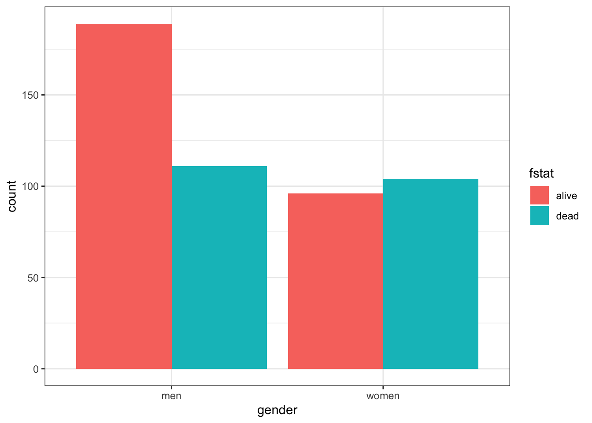

Chapter 4 Measures of association & attributable risk - epiR package
4.0.1 R packages required for this chapter
library(knitr)
library(tidyverse)
library(epiR)
library(kableExtra)
#library(hrbrthemes)4.1 Contingency tables
Begin by reading in the heart.csv dataset where the outcome status is recorded in the fstat variable.Details about the other variables can be obtained with str(). It is often of interest to initially explore any categorical exposure and outcome create a table of fstat (alive / dead) versus gender (men=0, women=1).
heart <- read.csv("data/heart.csv", header = TRUE)
# create gender factor variable
heart$gender <- factor(heart$gender, labels = c("men", "women"))
# Create a 2-way contingency table of gender vs outcome
table(heart$gender,heart$fstat )##
## alive dead
## men 189 111
## women 96 104As discussed in Chapter 3, graphical displays are often helpful and informative.
# Create side-by-side barchart outcome and gender
ggplot(heart, aes(x = gender, fill = fstat)) +
geom_bar(position = "dodge") + #position = "dodge", to have a side-by-side (i.e. not stacked) barchart
theme_bw()
4.2 Some basic defintions
Cumulative incidence —proportion of new cases devlopping in an iniital disease free population during a given risk period.
Incidence time —time span from 0 to the time of outcome/event/failure/occurrence
Person-time —length of time that each individual was in the population at risk of the event
Total person-time at risk - sum of all individual person-times
Incidence rate —number of new cases of disease divided by person-time over the period
Incidence proportion or cumulative incidence —with complete cohort follow-up, it is the proportion of people who become cases among those in the population at the start of the interval. Can also be considered a measure of average risk
Comparison of cumulative incidence and incidence rate
| Cumulative Incidence | Cumulative Incidence | Incidence rate | Incidence rate | |
|---|---|---|---|---|
| FU complete | FU incomplete | FU complete | FU incomplete | |
| Numerator | cases | Kaplan Meier Lfe Table |
Number cases | Number cases |
| Denominator | population | Kaplan Meier Lfe Table |
Person - time | Average population |
| Units | no units | no units | Time-1 | Time-1 |
| Range | 0 to 1 | 0 to 1 | 0 to infinity | 0 to infinity |
| Synonyms | Probability Proportion |
Probability Proportion |
Incidence density | Incidence density |
Risk is a general term but often refers to cumulative incidence (Q) but other interpretations including instantaneous risk (hazard) and risk at a given time point (prevalence).
Incidence rate and cumulative incidence proportion are longitudinal measures. In contrast prevalence measures are cross-sectional. The numerator of cumulative incidence and incidence rates are the number of cases while the denominator is proportional to the size (counts or person time) of the population from whioch the cases are derived. Numerator and denominator must cover the same population and the same time period.
4.2.1 Relative comparative measures
Generic name “relative risk” (RR) comparing occurrences between exposed (1) and unexposed (0) groups can refer to
* Incidence rate ratio IR = I1 / I0 (the most commonly used comparative measure)
* Incidence proportion ratio IPR = Q1 / Q0
* Incidence odds ratio IOR = [Q1/(1 − Q1)] / [Q0/(1 − Q0)]
* Prevalence ratio PR = P1/P0
* Prevalence odds ratio POR = [P1/(1 − P1)] / [P0/(1 − P0)]
4.2.2 Absolute comparative measures
Generic term “excess risk” or “risk difference” (RD) between exposed and unexposed can refer to
* Incidence rate difference ID = I1 − I0
* Incidence proportion difference IPD = Q1 − Q0
* Prevalence difference PD = P1 − P0
Ratios – most often employed to describe the biological strength of the exposure
Differences – absolute differences better inform about public health importance
4.2.3 Attributal measures
-Attributable fraction (excess fraction or attributable risk) is a measures of potential impact. \[AF = \dfrac{I_{1} - I_{0}}{I_{1}} = \dfrac{RR-1}{RR}\]
This measure estimates the fraction out of all new cases of disease among those exposed, which are attributable to (or “caused” by) the exposure itself, and which thus could be avoided if the exposure were absent. This represents the biological impact of exposure and is represented diagrammatically as

where AF fraction = black area out of total black + gray area.
-Prevented fraction When the incidence in exposed is lower, we define the prevented fraction as \[AF = \dfrac{I_{0} - I_{1}}{I_{0}} = 1 - RR\]
-Population attributable (excess) fraction (PAF) addresses the impact of exposure on the population level and also depends \(p_E\), the proportion of exposed in the population.
\[\begin{equation} PAF = I - I_{0} \tag{4.1} \end{equation}\]
where \(I\) = population incidence that can be expressed as a weighted average among exposed and unexposed as follows
\(I = p_{E}*I_{1} + (1-p_{E})*I_{0}\) and substituting into Equation (4.1) gives
\[\begin{equation} PAF = \dfrac{I - I_{0}}{I} = \dfrac{p_{E} * (RR-1)}{1 + p_{E}* (RR-1) } \tag{4.2} \end{equation}\]
Important: Use the crude and NOT adjusted RR in the above PAF formula that uses the fraction of the entire population exposed
Diagrammatically represented as

where PAF fraction = black area out of total black + gray area.
The PAF is only a simple fraction derived from the arithmetic manipulation of probabilities. As with other measures in public health, how this fraction is interpreted is key. For PAF to be important in the discussion of the public health consequences of intervening to reduce the prevalence of risk exposures, we need to be sure of
- the causal model
- absence or control of confounding
- understanding of multiple exposures & their combinations
- existence of a feasible intervention with no untoward effects
R packages for AF estimation include epiR, attribrisk, paf and AF. AF can handle confounders for different research designs, including survival data, matched case/control and clustered data.
4.2.4 Standardization
Sometimes the exposure disease relationship is distorted by another variable and stratification is the most transparent manner of dealing with this confounding. Combining this strata is most often used for age adjustment.Other more advanced techniques for dealing with confounding will be discussed in later chapters.
- Direct adjustment by standardization \(= \sum_{k=1}^K weight_k * rate_k /\) sum of weights
is a weighted average of stratum-specific rates for each group and applies them to a common standard, but often arbitrary, population, thereby removing differences due to distribution of the population
- Indirect adjustment is performed whenever the stratum-specific incidence risk estimates are either unknown or unreliable. In this case external stratum specific rates are applied.
4.3 Sample calculations
4.3.1 Example 1 - basic incidence measures
Consider the follow-up of a small cohort of 10 subjects.
# Create small data set
set.seed(1234)
data <- data.frame(
x=factor(c(1:10)),
y=abs(runif(10, 1,24)),
cen=factor(c("n","y","n", "y","n","n","y","n","y","n"), labels = c("died", "censored"))
)
# plot of follow-up time
p <- ggplot(data, aes(x=x, y=y, color=cen)) +
geom_segment( aes(x=x, xend=x, y=0, yend=y ) ) +
geom_point( color=ifelse(data$cen == "died", "orange", "blue"), size=ifelse(data$cen == "died", 5, 2) ) +
theme_bw() +
coord_flip() +
xlab("subject") +
scale_y_continuous(name="Follow-up (months)", breaks = seq(0, 24, 3), limits=c(0, 24)) +
ggtitle("Horizontal plot of follow-up time") +
labs(color = "Status")
p
The incidence rate at the end of the follow-up (21 months) = total number of deaths / total person time follow-up
options(scipen = 1, digits = 2)
ir_m <- sum(data$cen=="died") / sum(data$y)The incidence rate at the end of the follow-up (21 months) = 0.05 / person month or 4.9 / 100 person months
The incidence rate at the end of the follow-up could also be expressed in person years = 0.59 / person year or 58.76 / 100 person years
One could also calculate the incidence rate for the first 12 months.
options(scipen = 1, digits = 2)
deaths_1 <- data %>%
filter( y<= 12) %>%
summarise(n=n(), months=sum(y))In this time period there were 3 deaths in 11.18 months of follow-up. There were also 7 subjects who completed the 12 months follow-up with no deaths. So the total follow-up time = 95.18
Therefore the incidence rate at 12 months = 0.03 / person month or 3.15 / 100 person months.
What is the cumulative incidence over 21 months?
On the surface, straightforward calculation of number of deaths / initial population = 0.6. However this ignores the censoring.
The incidence proportions in the presence of censoring can be estimated by assuming a constant rates. \[Q = 1 − exp(−I × ∆) = 1- exp(-0.049 * 21) = 0.64\] With dynamic study population individual follow-up times are variable and difficult to measure accurately such that a common approximation is to use the mid-population average of the initial and final populations multiplied by the follow-up time.
4.3.2 Example 2 - rare disease
For rare disease, the cumulative incidence, rate incidence and incident odds ratio are very similar.
Consider the following data;
options(digits = 5)
dt <- data.frame(Yes= c(4000,30, 7970), No=c(16000,60, 31940), row.names=c("No. initally at risk", "No. cases", "Person years at risk"))
kbl(dt) %>%
kable_paper() %>%
add_header_above(c(" ", "Exposure" = 2)) |
Exposure
|
||
|---|---|---|
| Yes | No | |
| No. initally at risk | 4000 | 16000 |
| No. cases | 30 | 60 |
| Person years at risk | 7970 | 31940 |
cum_inc <- (dt[2,1]/dt[1,1]) / (dt[2,2]/dt[1,2]) # 30/4000 / 60/16000
rate_ratio <- (dt[2,1]/dt[3,1]) / (dt[2,2]/dt[3,2])
odds_ratio <- (dt[2,1]/(dt[1,1]-dt[2,1])) / (dt[2,2]/(dt[1,2]-dt[2,2]))This gives a cumulative incidence, rate incidence and incident odds ratio of 2 , 2.0038 , 2.0076, respectively
4.3.3 Example 3 - Standardization
Consider the following cases and populations at risk from 2 different cities
| age | cases | at_risk | city |
|---|---|---|---|
| <40 | 20 | 100 | Pop1 |
| >40 | 100 | 200 | Pop1 |
| <40 | 40 | 400 | Pop2 |
| >40 | 80 | 200 | Pop2 |
The crude risk ratio (Population 1 : Population 2) is 2 but there is severe unbalancing in the age distributions of the 2 populations and age influences the outcome.
# stratum specific rates
rate1 <- dat[1:2,"cases"] /dat[1:2, "at_risk"]
rate2 <- dat[3:4,"cases"] /dat[3:4, "at_risk"]
std.pop <- c(500, 100) # standard young population
# adjusted risk ratio
std.pop1 <- rate1*std.pop; std.pop2 <- rate2*std.pop
rr_std_y <- sum(std.pop1) / sum(std.pop2)
std.pop <- c(100, 500) # standard older population
# adjusted risk ratio
std.pop2 <- rate1*std.pop; std.pop2 <- rate2*std.pop
rr_std_o <- sum(std.pop1) / sum(std.pop2)Standardizing the age distributions (500, 100), we see that Population 2 still has an increased risk, 1.66667, but part of the crude difference was due to the confounding effect of age. Standardizing to an older population (100,500) leads to a smaller relative risk, 0.71429.
The calculations could be incorporated into a user defined function.
std.pop <- c(100, 500)
std.direct <- function(x1,y1,x2,y2,std.pop){
rate1 <- x1/y1; rate2 <- x2/y2
std.pop1 <- rate1*std.pop; std.pop2 <- rate2*std.pop
sum(std.pop1) / sum(std.pop2)
}
std.direct(dat[1:2,2], dat[1:2,3], dat[3:4,2], dat[3:4,3], std.pop)## [1] 1.2857Rather than writing your own function, one can use epi.directadj from the epiR package.
Care must be taken to provide the arguments as matrices.
obs <- matrix(dat$cases, nrow = 2, byrow = TRUE,
dimnames = list(c("Pop1","Pop2"), c("<40",">40")))
tar <- matrix(dat$at_risk, nrow = 2, byrow = TRUE,
dimnames = list(c("Pop1","Pop2"), c("<40",">40")))
std <- matrix(data = c(500,100), nrow = 1, byrow = TRUE,
dimnames = list("", c("<40",">40")))
ans <- epi.directadj(obs, tar, std, units = 1, conf.level = 0.95)
rr <- ans$adj.strata$est[1] / ans$adj.strata$est[2]
ans## $crude
## strata cov est lower upper
## 1 Pop1 <40 0.2 0.122165 0.30888
## 2 Pop2 <40 0.1 0.071441 0.13617
## 3 Pop1 >40 0.5 0.406820 0.60813
## 4 Pop2 >40 0.4 0.317175 0.49783
##
## $crude.strata
## strata est lower upper
## 1 Pop1 0.4 0.33164 0.47830
## 2 Pop2 0.2 0.16582 0.23915
##
## $adj.strata
## strata est lower upper
## 1 Pop1 0.25 0.18082 0.34038
## 2 Pop2 0.15 0.12180 0.18346This function gives the crude, crude by stratum and the adjusted values. The adjusted value for population 1 = 0.25 and the adjusted value for population 1 = 0.15 so the relative risk is 1.66667 as calculated previously for the older standard population.
It is most often helpful to include a measure of the variation around this point estimate and the general structure is: Point estimate ± [1.96 × SE (estimate)] where 1.96 is the z-score (standard normal score) corresponding to the 95% confidence level (i.e., an alpha error of 5%). Confidence intervals for different levels of alpha error obtained by replacing this value with the corresponding z-score value (e.g., 1.64 for 90%, 2.58 for 99% confidence intervals).
Because the RR is a multiplicative measure and thus asymmetrically distributed, its SE needs to be calculated in a logarithmic scale. \[Se(log RR) = \sqrt{\frac{b}{a + b} + \frac{d}{c + d}}\] where a = exposed cases, b = exposed non cases, c = unexposed cases, d = unexposed non cases
The 95% CI calculated on the logarithmic scale is therefore log(95%CI RR) = log RR ± 1.96 X SE(log RR)
log_se <- sqrt((150/(150*450)) + (90/(90+510)))
log_CI <- log(rr) + c(-1,1)* 1.96 * log_se
CI <- exp(log_CI)The 95% CI for the relative risk are therefore from 0.77578 to 3.58061.
Remembering that these CIs are calculated on a multiplicative scale it is noticed that the point estimate is not the arithmetic mean of the confidence limits. Rather the point estimate equals the geometric mean, so as expected \(\sqrt{.78 * 3.58} = 1.66\).
This follows from lower limit 95% CI (RR) = RR × e–[1.96 × SE(log RR)] and upper limit 95% CI (RR) = RR × e[1.96 × SE(log RR)]
so lower CI * upper CI = RR2 or RR = \(\sqrt{LCI * UCI}\).